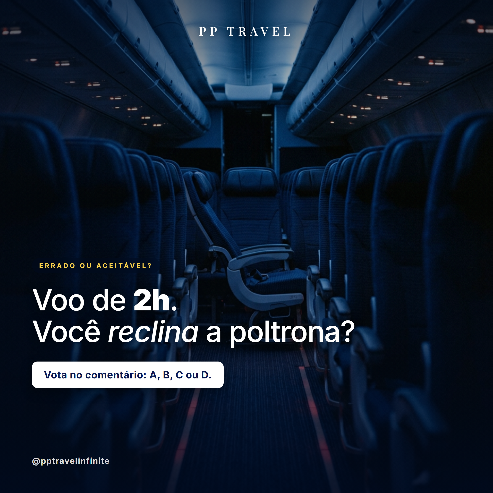

PP-Travel · Instagram Motor
7 dias com conteúdo gerado · gerado em 2026-06-02 14:06
Posts
Caption
A mala volta igual. Você não.
Tem viagem que mexe em algo lá no fundo — e é isso que fica.
Mario Quintana já tinha entendido isso muito antes da gente.
Marca alguém que voltou diferente de uma viagem 👇
1º comentário (auto)
Tem destino que a gente esquece. E tem viagem que vira parte de quem você é. 🫶
#PPTravelInfinite #PassagensAéreas #DicasDeViagem #ViajarÉPreciso #DestinoCerto #MilhasComSegurança #FilosofiaDeViagem #ExperienciasQueValem #MarioQuintana #FrasesDeViagem
Caption
Tem brasileiro que chega aos 40 sem nunca ter visto a neve cair de verdade.
Não a neve da foto na internet — a neve de verdade, caindo devagar, pousando no seu casaco, no silêncio da montanha. Junho é quando Bariloche abre a temporada e os Andes ficam brancos. É perto, é nosso vizinho, e é mais fácil de chegar do que você pensa.
A montanha o inverno entrega. A passagem, a gente resolve com milhas — pela mesma cia, por bem menos do que você imagina.
Marca aqui aquela pessoa com quem você veria a primeira neve 👇
1º comentário (auto)
Detalhe que muda a viagem: a temporada de neve em Bariloche costuma firmar de junho a agosto — junho pega o começo, com menos gente e a montanha já branca. ❄️
E pra quem já tá montando o orçamento: dá pra emitir Bariloche via milhas pela mesma companhia, parcelado. Manda 'BARILOCHE' na DM que a gente monta a cotação sem compromisso.
Caption
Não viajamos pra escapar da vida.
A gente viaja pra que a vida não escape da gente.
Qual viagem te fez sentir isso? 👇
Caption
A gente acumula objeto.
Devia acumular janela de avião.
Qual foi sua melhor vista de janela? 👇
1º comentário (auto)
Aqui em casa, a minha favorita é a chegada em Lisboa, com o Tejo cortando a cidade no pôr-do-sol. Conta a sua aí pra gente.

Caption
A pergunta que divide brasileiro:
Voo de até 2 horas: você reclina a poltrona ou deixa em pé?
Tem gente que paga pra ter conforto. Tem gente que acha babação. E tem aquele que faz silêncio mas julga.
Conta nos comentários:
A) Reclino sim, paguei pra reclinar 💺
B) Só se for noturno 🌙
C) Nunca, é desrespeito 🚫
D) Depende de quem tá atrás 👀
1º comentário (auto)
A gente é time A (paguei pra reclinar, né?) 😅 mas curioso pra saber qual o time mais forte aqui. Marca aquele amigo que tem opinião certeira sobre etiqueta de viagem.

Caption
Junho é o mês que os Andes ficam de céu limpo o ano inteiro.
É acordar de madrugada, subir a montanha no frio seco e ver Machu Picchu inteira aparecer na neblina — sem chuva, sem nuvem tapando. Quem foi em janeiro sabe a diferença.
A estação seca é a parte que o clima entrega. A passagem, a gente resolve com milhas — pela mesma cia, por bem menos do que você imagina.
Marca aqui aquela pessoa com quem você subiria essa montanha 👇
1º comentário (auto)
Pequeno detalhe que muda a viagem: na estação seca (junho-agosto) o nascer do sol em Machu Picchu costuma ser de céu aberto — a melhor luz do ano pra foto. 📸
E pra quem tá montando o orçamento: dá pra emitir Cusco via milhas pela mesma companhia, parcelado. Manda 'CUSCO' na DM que a gente monta a cotação sem compromisso.

Caption
Junho é a única janela do ano pros Lençóis com as lagoas cheias.
Depois disso, seca até fevereiro.
Você já foi pra esse pedaço do Brasil que parece outro planeta? 👇
1º comentário (auto)
Quer cotar passagem pro Maranhão com milhas? Manda 'LENÇÓIS' no direct que a gente faz a conta pra você.